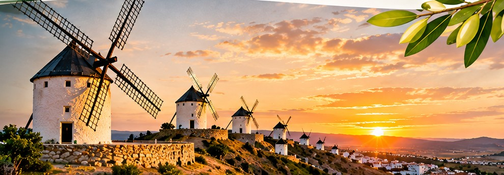

Turismo
Interés por los itinerarios, los viajes culturales, el turismo de proximidad y las experiencias nacionales e internacionales.
Soy Ismael López. Mi experiencia en calidad, tecnología y organización es la base desde la que estoy construyendo una nueva etapa en turismo, eventos y catering.
A lo largo de mi trayectoria profesional he trabajado en entornos donde la precisión, la responsabilidad y el cumplimiento de los procedimientos son esenciales: laboratorios, control de calidad alimentaria y áreas tecnológicas.
Hoy quiero trasladar esa forma de trabajar al turismo, la organización de eventos y el catering: sectores en los que la coordinación, la atención al cliente y el cuidado de los detalles marcan la diferencia.
No se trata de dejar atrás lo aprendido, sino de aprovecharlo para crecer en una dirección que me ilusiona.

Un perfil multidisciplinar, formado en distintos sectores, que combina rigor técnico y capacidad de adaptación.
Estoy ampliando mi formación y orientación profesional hacia actividades en las que la planificación y la calidad del servicio son fundamentales.
Interés por los itinerarios, los viajes culturales, el turismo de proximidad y las experiencias nacionales e internacionales.

Formación orientada a eventos corporativos, sociales, culturales, institucionales, ferias, congresos y celebraciones de todo tipo.

Interés por la logística, el protocolo, el montaje y los servicios gastronómicos, respaldado por mi experiencia en calidad alimentaria.
Estoy abierto a proyectos, propuestas profesionales y colaboraciones relacionadas con el turismo, los eventos y el catering.
Contactar conmigo